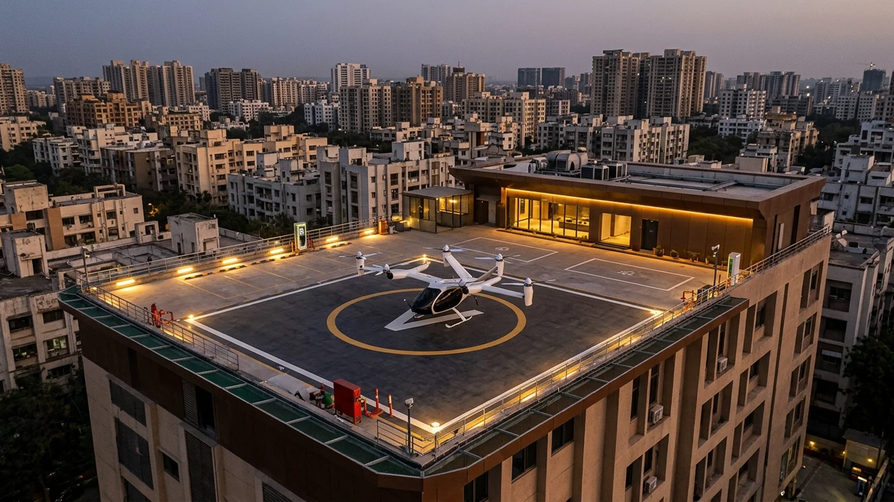
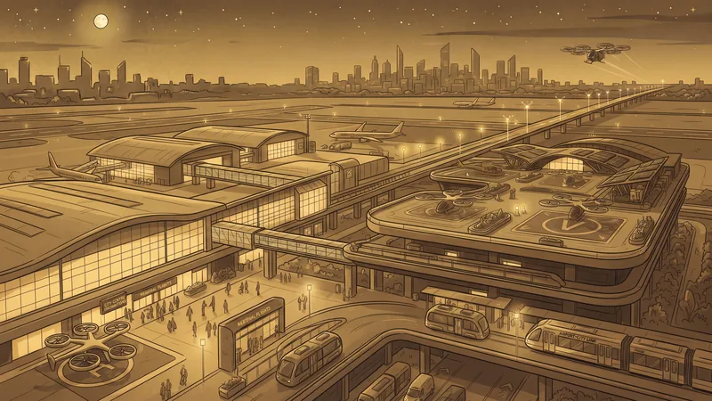
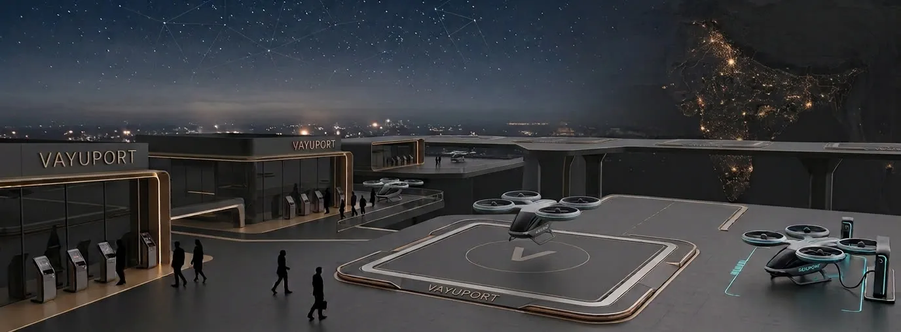

015 services
Vertiport Infrastructure & Development
Converting existing helipads, selecting sites and developing helipads, vertiports and hybrid aviation facilities.
Explore Vertiport Infrastructure & DevelopmentAdvanced Air Mobility Infrastructure
Developing intelligent, sustainable and connected infrastructure to enable the next generation of electric air mobility.
The aircraft & the pad
Physical infrastructure and digital systems designed to connect air taxis, passengers and cities.
About VAYUPORT
VAYUPORT plans, develops and operates aviation ground infrastructure — helipads, vertiports and hybrid aviation facilities — and advises on the airspace and coordination requirements that come with them.
Electric aircraft can only serve a region once there are safe, well-located places to land, charge and board. That infrastructure takes years to plan, so the work has to start well before aircraft enter service.
Our approach is practical: adapt existing helipads where it is technically feasible, plan new sites carefully, and work alongside the competent authorities at every stage. We are starting with Northeast India, where hills, rivers and distance make regional connectivity matter most.

Our vision
Building a connected, sustainable, and accessible air mobility ecosystem for Northeast India.
Our Solutions
Eleven services across three active categories, covering how aviation ground infrastructure is planned, built, run and integrated into the airspace.
Converting existing helipads, selecting sites and developing helipads, vertiports and hybrid aviation facilities.
Explore Vertiport Infrastructure & Development
Operating, maintaining and staffing helipads, vertiports and hybrid aviation facilities.
Explore Operations & Asset Management
Airspace planning, air traffic management consultancy and coordination with ATC and aviation authorities.
Explore Aviation & Airspace AdvisoryDetails for this category will be shared soon.
Industry Applications
Six segments where helipads, vertiports and hybrid facilities could add connectivity. These are potential applications, not operational projects.

Linking airports with city centres and regional destinations.

Direct air access for hotels, resorts and destinations.

Infrastructure for time-critical medical access.

Vertiports designed into business districts and mixed-use projects.

Networks of facilities linking districts and regional centres.

Air links where hills, rivers and distance slow surface travel.
Why VAYUPORT
One partner across planning, development, operations and airspace advisory — focused on the regions where better connectivity changes the most.
Facilities planned around electric aircraft, re-use of existing helipads where feasible, and renewable energy where the site allows.
A focus on linking communities and regional centres — starting with Northeast India, where terrain makes every hour of travel count.
From site evaluation to construction, one team carries a facility through each stage of development.
Advisory on helipad conversion, site selection, airspace planning and coordination with ATC and aviation authorities.
Operations, maintenance and trained manpower, so facilities run reliably once they are built.
Helipads and hybrid facilities designed to serve helicopters today and to accommodate eVTOL aircraft as they arrive.
Use Case
A short walkthrough of how VAYUPORT infrastructure connects aircraft, passengers and cities.

Work with VAYUPORT
Whether you own a helipad, are planning a development, or are exploring regional air connectivity — we’d like to hear about your project.